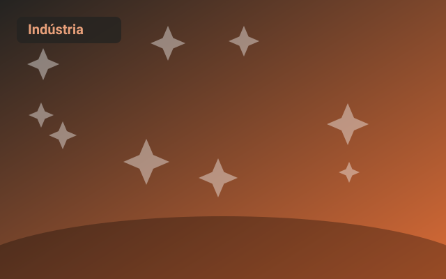

Como funciona o ciclo de vida de um console
Do lançamento ao fim do suporte: entenda as fases que um console atravessa e por que as gerações costumam durar entre cinco e oito anos.
Um console costuma passar por quatro fases: lançamento, consolidação, maturidade e transição. No início, o catálogo é pequeno e os estúdios ainda aprendem a explorar o hardware. Com o tempo, o preço tende a cair, surgem revisões do aparelho e os jogos aproveitam melhor os recursos da máquina. Perto do fim, o suporte diminui e a próxima geração começa a ser apresentada.